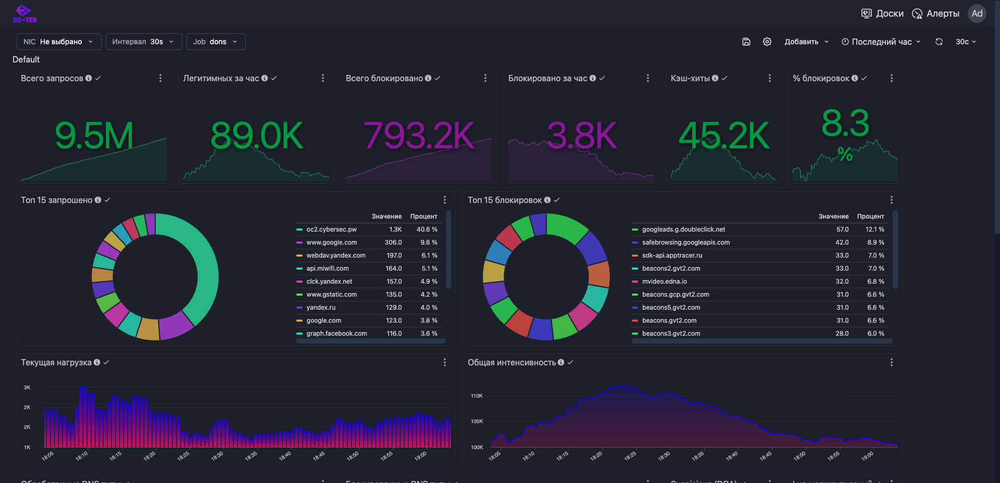

Malware и phishing
Блэклисты, репутационные источники и эвристический анализ блокируют вредоносную инфраструктуру.
Do-Tek блокирует фишинг, вредоносные домены, C2-инфраструктуру и DNS-туннели до того, как угроза попадёт в сеть.

Блокировка до установления соединения с опасным ресурсом.
Метрики, журналы, Grafana, Prometheus и интеграции с SIEM.
LDAP/AD, индивидуальные политики и изолированные сети.
Производительный DNS-контур с фильтрацией, аналитикой и управляемыми политиками.
Блэклисты, репутационные источники и эвристический анализ блокируют вредоносную инфраструктуру.
Энтропия, Base32/64, hex-паттерны и поведенческие признаки выявляют скрытые каналы и генераторы доменов.
Оптимизированный резолвинг, кэширование, геомаршрутизация и отказоустойчивая архитектура.
QPS, задержка, блокировки, категории, топы доменов и состояние узлов доступны в одной панели.
Syslog, QRadar, Prometheus, Telegram, Teams, Slack и Email для оперативной реакции.
Персональные политики, группы пользователей, внутренние зоны и работа в изолированном контуре.
Do-Tek дополняет текущий стек безопасности, не требуя перестройки всей сети. Возможны пилот, on-premise-развёртывание и адаптация под требования заказчика.
Подготовим план пилота, развернём решение и покажем результат на вашем DNS-трафике.